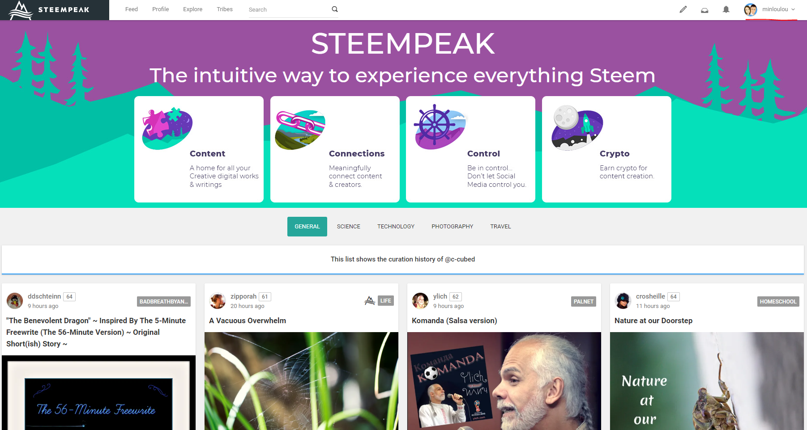
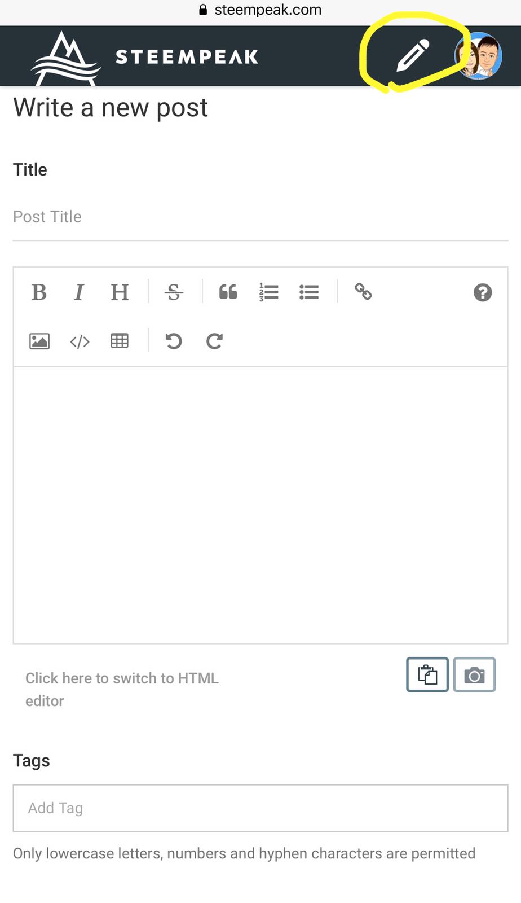

第9章 周边网站
9.1 乌托邦 80
- 乌托邦是什么
@utopian-io是 https://utopian.io 在Steem的账号。乌托邦试图奖励开源系统的贡献者。
本来开源系统都是由志愿者义务贡献没有报酬。 @elear认为应该想办法奖励开源系统的志愿者，于是创建了utopian.io，用Steem的奖励系统奖励开源系统的志愿者。
也就是说以前开源系统的志愿者都是活雷锋，而现在乌托邦要给志愿者发钱，于是Steem就成了最大的活雷锋。这笔经济账我不会算，不知道Steem将来是否会得到收益。但是目前对于草根小鱼来讲，去开源系统做贡献可以实实在在的得到回报。
- 如何登陆乌托邦
首先先去utopian.io登陆。用Steem的用户名密码可以登陆。
注意：现在不可以用posting key登陆，必须至少用active key才可以登陆utopian.io。
登陆utopian.io以后，他们会修改posting权限。这个我很不喜欢，但是既然改了就改了吧。以后如果不用了再想办法改回来。

注意上面的截图，busy.org也一样把posting权限修改了。
- 如何在乌托邦发帖
登陆乌托邦以后就可以发“Contribution”，就跟在Steem发帖子差不多。不同的是，必须对开源系统有了贡献以后才能发，而且贡献要对应github上的开源系统。
贡献包括以下几种：

对于不懂编程的朋友可以去做翻译。翻译需要去crowdin.com登陆。那里的登陆用户和密码跟Steem没有关系。建议使用同样的用户名，表功的时候比较方便。大家可以看我这个翻译贡献帖。从登陆，到翻译完成，到乌托邦发帖总共忙活了一个多小时。发现自己不喜欢翻译这种事情，以后可能不玩这个了。大家谁有兴趣翻译可以去玩。
像我一样对翻译没有兴趣的可以去提供新点子或者给各种开源系统找Bug。注意，您的贡献必须要对应GitHub的项目，提交贡献时必须填写：
不一定需要GitHub的账号也可以做以上的工作。所以不是程序员也可以贡献很多。
- 如何获得奖励
在乌托邦发表帖子以后会有moderator来看。Moderator可以直接批准或者拒绝，也可以提出修改意见。我的前两个帖子都是根据意见修改以后接受的。
在乌托邦的帖子会有很多beneficiaries，这些都是给乌托邦代理的SP的大股东。你的每个帖子都需要给这些股东分红。
- 总结
@utopian-io用Steem系统奖励开源系统的贡献者。这个账号获得了超过三百万代理，也是目前不多的给草根小鱼点赞的大鲸账号。希望大家玩的开心。
9.2 busy.org 81
刚来Steemit的新人可能经常会经常听说Busy，CNSteem，Utopian（乌托邦），这几个词，却搞不懂它们是什么，那么它们是什么呢？我们应该都知道，Steemit的内容都是使用区块链技术保存，我们可以把这个区块链当作一块光盘，而我们可以使用很多方法播放这块光盘，比如DVD,EVD,或者带有光驱的电脑。也就是说我们可以用Busy，CNSteem,Utopian以及原版Steemit,这些不同的网站去读取这个Steemit区块链。那么既然有了Steemit.com这个网址，为什么还要用其它网址呢？这就是因为每个不同的网址登陆这个区块链都有不同的优缺点，下面我们分别介绍吧。
- Busy Busy的主网页为busy.org,这个网页的主要优势是在原版Steemit.com的基础上增加了很多新功能，比如查询文章详细收益的功能，如下图所示：
另外还有查看每日Steem以及SBD价格的功能，如下图所示：
还有一个就是当你使用Busy发表文章并在标签中加入busy，你就可以获得busy对文章的点赞。
接下来我们来详细了解一下busy的各种设置与功能。
- 这里是Busy.org 的应用介绍：
当你通过SteemConnect登录之后，你就会看到这个页面。在左上角，你会看到在Steemit.com上熟悉的选择标签。让我来一一为你介绍：
- 我的资料-我的个人资料主页
- 订阅-显示订阅的帖子（被你关注的用户）
- 最新-显示其他用户的帖子（根据流行，最新，热门，推广来呈现）
- 回复-用户对你的帖子或评论的回复
- 钱包-就是钱包，基本上就是和Steemit一样，只是有比较好的用户界面
- 热门话题-里边有不同的流行标签
- 中间的部分就是大家的帖子，和steemit没两样。而在右边就会有推荐用户让你关注（本身觉得显示出我经常关注的用户比较实际）
这个是钱包页面。设计比较清晰，简洁，而且右边还有Steem 和SBD的实时价格。除此，也可以看到全部的Steem和SBD交易（和Steemit一样，但最重要比较快）。
这是你的个人资料主页。无法否认，这个设计比Steemit好许多，哈哈。而且，你可以在右下角看到自己的点赞能量（Voting Power），能量越少，点赞的价值也越少。你也可以看到你是几时加入Steemit的。
这里，你可以选择设置功能。
和Steemit不同之处在于，Busy.org的设置内可以调动点赞百分比，不像Steemit这样只能默认100%点赞（除非有500SP以上身家）。
啊，忘了告诉大家！这里可以换语言设置。赶紧把English换成简体中文。哈哈，方便大家阅读。我也是刚发现新大陆。 然后，最下方的NSFW其实是那些不适合在公共场合阅读的帖子（通常都是有暴力色情成分），所以就不必点它。除此，在Busy.org你还有书签功能！就在右上角的设置选项之上，点击后就会呈现出全部的收藏帖子。
要怎么收藏帖子呢？就在帖子的右上方（有三个圆点），点了后选择收藏就可以了。
要怎么写文章呢？你可以点击你照片旁边的铅笔图像。之后，这个熟悉的文章页面就出现了（和Steemit没差，这里就不细说了）。
还有个好料没介绍给大家，如果把鼠标移向点赞的数量，你就可以看到点赞你的用户和价值。这是Steemit没有的功能。
最后，你也可以在点赞时，选择自己要的比重，不必100%赞了，而且也可以看到自己的赞知多少。
一些在Busy.org的使用指南：
- 在Busy.org发帖子后，在Steemit自然就会出现那个帖子。
- 在Busy.org发帖子，记得标签 “busy“ 这样busy的机器人回来赞你的帖子
- 机器人只在12小时内赞一个帖子，就是说一天可以有两个帖子被赞。
- 机器人不必付费，只需有凑足500SP总身家的跟随者即可。
- 如果要得到100%的点赞百分点，那么得有1200万SP 的总身家跟随者支持你啊。（大概是25条大鲸！）
- 当机器人不够能量时，回调高比重率，就可能无法得到预期的点赞值（好过没有嘛）
总的来说，使用Busy.org也是可以赚赞。最重要就是提高自己的影响力，造福人群。
影响力=更多跟随者=更高价值的赞
9.3 dtube 82
DTube是基于steem区块链开发的一个去中心化的视频分享网站，跟busy.org和steemit.com是类似的概念。在DTube上点赞留言分享，数据上传steem区块链后在steemit上是同步更新的。
那么DTube具体是什么，如何使用，我们来初步体验下：
1、登陆
登陆网址：https://d.tube
打开网站后，我们可以看到网站的首页已经有很多的视频分享，有热门短片，潮流短片等等。视频下面有个美元$的符号，跟steemit一样是分享内容获得点赞的收益。
点击右上角登陆，出现上图的登陆界面。由于DTube是搭建在steem区块链上，使用steemit账号+post私钥登陆，如果没有steemit账号，那你需要注册一个。
输入steemit ID账号，注意登陆密码一栏是输入private post key。需要登陆steemit获取private post key。
进入在steemit的钱包页面的permissions，在第一行，点击右侧的 show private key，我们可以在左侧得到我们需要的DTube登陆密码（密码千万不要泄露）。
2、点赞留言
登陆后，你就可以去访问大家分享的视频，可以给他们点赞和留言了。
如图，访问了一用户的游戏视频分享，在视频下面有一个大拇指的按钮，就是点赞。
也可以留言，在这里的留言是同步显示到steemit上。
3、分享自己的视频
在网站右上角有个向上镜头的云朵，点击进入上传视频的页面。按照步骤一步步操作。1、上传视频 2、上传封面图片 3、提交到区块链。添加标题，内容摘简要和标签（dtube是默认标签，可自行再添加其它标签）。
封面图片可以由DTube直接截屏视频获得。DTube只支持用户自己上传视频，不支持其它视频链接。
跟steemit上传图片一样，DTube视频上传的速度很慢。在steemit中发文上传图片，图片并不上传到steem区块链上。DTube也是类似，不过DTube上传的视频接入了IPFS存储服务（一个去中心化的可能颠覆http网络协议的区块链项目）所有的视频将会先上传到IPFS存储。
视频及截图上传完成后，填写标题，摘要及标签后就可以点击提交！
提交完成后，弹出提交完成的信息，点击WATCH YOUR VIDEO你就可以查看你上传的视频了。
同时steemit上也自动分享了DTube上分享的视频。
在steemit里同步更新的视频分享如上图，steemit里点赞在DTube里数据也是同步的。在steemit里点击编辑，可以对DTube分享的视频摘要进行修改！
除了在steemit写文章外，现在你也可以在DTube上分享视频了，顺便赚点零花钱！
9.4 Dlive——去中心化的视频与直播平台 83
区块链时代，你有一技之长就可以的到丰厚的回报，比如你擅长视频剪辑与拍摄，就可以去Dlive.io一显身手。获得steem区块链代币。
简单介绍一下Dlive，它是基于steem区块链的视频直播项目，当然它不限于直播，也可以直接上传视频分享。你的视频很优秀、很有趣或者很有用就可以获得丰厚的steem代币回报。
- 必备条件
因为是基于steem区块链的，所以你需要有steemit账号。新用户注册可以在steemit.com自行注册。前一阵子不好注册不知道现在怎么样。你也可以在cnsteem.io花很少的钱快速注册，这个网站是steem中文区见证人skean 开发的。方便了许多steem新人。
- 登陆Dlive.io
在右上角点击login 选择用steem账号登陆。填入你的steemID和posting key 就可以登陆了，这一步和黄总介绍Dtube的文章一样我就不多介绍了。我刚才试了一下，如果你的浏览器中steemit是已登陆状态，在选择了steemit账号登陆后，Dlive可以直接登陆进去。
- 你可以在dlive平台做什么
1、游戏直播，如果你打的一手好游戏，这个Dlive也很适合你，这上面大部分视频是游戏视频或直播。
2、旅行视频。这个类型在steemit平台一直非常受欢迎了，如果你是一个喜欢用脚步丈量思想的人，把自己的旅行视频发上来是个很好的选择。
3、区块链项目分析：有一个叫boxmining的好像是台湾人，以前在youtube上录制视频做区块链内容相关视频。积累了大量粉丝。后来同时把视频发布到Dlive上，收益非常好。
除此之外：DJ音乐调音、钢琴弹奏、瑜伽、健身、美食都只要够吸引眼球就可能获得点赞收益。比如可以借鉴国内的各种短视频平台的内容。
最后说一个比较重要的技巧，Dlive有自己的discord聊天室。Dlive的团队、管理员们和用户都在里面交流，毕竟Dlive是一个社群，如果想发展的好，和团队人员搞好关系是非常重要的，当然聊天室里面有中文区，也有国人管理员，但是其他频道都是用英语交流的。如果你想练习英文，来这里也是很好的。
9.5 STEEMPEAK
9.5.1 STEEMPEAK的PC版基本使用方法 84
STEEMPEAK推出了一年多了，不知道各位有沒有在使用?
@STEEMPEAK持續的優化令我大開眼界, 尤其是他在@peakmonsters的貢獻, 真的令@steemmonsters生色不少
十分感謝@asgarth @jarvie @r00sj3 @dmytrokorol的努力。
(Really appreciate those amazing work from @asgarth @jarvie @r00sj3 @dmytrokorol)
今日, 讓我簡單教大家玩一玩STEEMPEAK, 增加你在使用Steemit的樂趣
在Steemit上, 最基本的當然是 吸收新知、寫作分享和查看錢包收益。在STEEMPEAK上當然可以做到同樣的動作，但有更好的用家體驗！
第一步當然是 登入。
先在右上角找到Login如 (圖一)
如果你是在使用Chrome/Brave的瀏覽器的話，而又有安裝Steem Keychain的話，你會看到以下(圖二)的這個畫面。只需要簡單輸入的名字便可以登入了
而如果你沒有Steem Keychain的話，你會被帶到steemconnect的畫面如 (圖三)
這個時候你便需要使用active key登入了 (圖四)
登入成功後你會看到你的名字(minloulou)和個人頭像在右上方出現 (圖五)
(圖一)
(圖二)
(圖三)
(圖四)

(圖五)
成功登入後，你可以使用上方的標題開始探索(Feed/Explore) - 如Feed是指你跟隨(Follow)的人的最新帖子(圖六) - Explore則是可以按不同條件去搜索相關的帖子 - 在(圖七)我搜索了#cn區的最有價值(REWARD)帖子 - 另外你也可以按(REWARD)那個字，彈出菜單去選擇最新(Created)的帖子(圖八)
我個人最喜歡用這個功能去搜索#cn-activity的活動，透過參加活動可以令大家快速融入社區。首先當然要Follow @cn-activity的帳號，然後使用Explore這個功能，再選擇FAVORITE TOPICS(最愛主題)，最後找到最新(Created)的帖子 (圖九)
(圖六)

(圖七)
(圖八)
(圖九)
在Steemit別忘了寫一寫、分享一下與其他人互動 - 在STEEMPEAK的右上方找到這支鉛筆後你可以看到(Create a Post)的功能(圖十) - 在Steemit的寫作需要留意的當然是標題(Post Title)、內容、標籤(tag)、草稿(Draft)和發布(PUBLISH) - 你可以寫(圖十一)我把需要留意的地方都畫上紅線
在STEEMPEAK上寫作是十分安心的，他會自動幫你儲存草稿(Draft)，作家最怕是花了很多時間，寫了很長的一篇文作後突然因為故障或其作問題而令作品不見了!!!
(圖十)
(圖十一)
最後說一下STEEMPEAK超強大的錢包功能(超強大)
在右上方按一下的你的名字便會彈出選單。點選錢包(Wallet)後，你便會看到你的STEEM/SP/SBD和TOKENs(Steem Engine Tokens)(圖十二)
還可以發送STEEM/SBD, PowerUp, 代理(DELEGATE), Power Down/Cancel Power Down, 看到Power Down的最新情況, 領取收益(Claim Rewards), Steem/SBD的最新價錢, 戶口價值(Estimated Steem Account Value),
(圖十三)查看戶口的轉帳(Transactions), 篩選(FLITERS)指定條件的交易
好用的功能數之不盡，還請各位努力探索或者期待我未來的帖子！！
(圖十二)
(圖十三)
最後最後還有一個很重要的是支持開發者(SUPPORT US)，如果你用得開心，不妨將你收到的STEEM/SBD捐贈給開發者以支持他們繼續努力!!
9.5.2 STEEMPEAK的手機版 85
齊齊來玩STEEMPEAK(一) STEEMPEAK的基本使用方法
昨天寫了STEEMPEAK的基本後, @john371911提問了@STEEMPEAK的手機版,有沒有手機apps, 答案是: 暫時沒有, 但可以使用手機瀏覽器使用@STEEMPEAK的大部份功能。
開啟手機瀏覽器進入@STEEMPEAK的主頁: https://steempeak.com/
在右上角點一下後便會彈出Login的選單。手機由於沒有Steem Keychain, 所以使用steemconnect去登入。
WhatsApp Image 20190629 at 15.52.20.jpeg
WhatsApp Image 20190629 at 15.52.21.jpeg
WhatsApp Image 20190629 at 15.52.22.jpeg
WhatsApp Image 20190629 at 15.52.22 1.jpeg
登入成功後, 你會看到你的個人頭像在右上方。
點一下你的頭像便會彈出選單。
由普通的Feed, Explore, Wallet等, 到最新的Tribes也有, 甚至也可以有search, settings, switch users等等!!!
完全地把大部份功能移植至手機網頁版本, 感謝@STEEMPEAK的努力!! 在手機也可以接近相同的良好體驗

特別一提的以下2個比較細微的功能 - Feed頁面的Filter功能 - 中間的基本資料選單
Filter如圖如示, 可以直接跳到你喜愛的作者的頁面而不用search, 真是貼心的設計!!
另外中間的這個選單有些時候會被人忽略, 所以特別提出。
最後最後還有一個很重要的是支持開發者(SUPPORT US)，如果你用得開心，不妨將你收到的STEEM/SBD捐贈給開發者以支持他們繼續努力!!
各位也可以follow @steempeak的page以得到最新的發展，也可以加入他們的discord: https://discord.gg/pC5bgK 發表你的意見~!
9.6 Steemitworldmap 86
在我的另一篇文章《摄影爱好者Steem社区新手发帖入门》中有提到使用Steemitworldmap能带来额外的收益。但是Steemitworldmap使用方法和标签不太一样，今天我专门写一篇文章来介绍如何使用Steemitworldmap。
Steemitworldmap是什么？
Steemitworldmap是一个基于Steem社区和谷歌地图的一个应用，官方网址是：https://www.steemitworldmap.com/。
如果你在steem上发旅游贴或风光照片并在这个地图上标记了具体地点，那么在这个地图上将看到你发的帖子。以下便是进入https://www.steemitworldmap.com/ 看到的界面，你可以大致看到每个地方发帖的数量，有数字的代表改地方不止一篇文章，没有数字的标记代表只有一篇文章，可以点击这些标记查看与这个地方相关的所有帖子。
使用Steemitworldmap的好处
- 有可能得到@steemitworldmap的点赞
- 如果配合旅游帖，有可能入选Travel Digest，一旦入选，将会得到更大的曝光以及更多人的点赞。
- 可以按地图来查看自己或某个Steem账号使用过Steemitworldmap的帖子。例如下图通过Filter来筛选：
如何使用Steemitworldmap
由于Steemitworldmap调用了Google地图，因此正常国内网络情况下，国内的用户是无法查看地图的，因此我将分两种情况来描述。
海外用户的使用方式
1.访问网址：https://www.steemitworldmap.com/
2.搜索输入框中输入地址，并且从联想地址中选择一个，如果没有特别精准的也先选择一个，到地理里可以再次调整。

3.选择地址后，点击地图底部的“code”按钮

4.点击你认为正确的地点后，地图下部会显示出一串类似“\[//\]:# \(\!steemitworldmap 31.149316 lat 121.803556 long d3scr\)”的代码，点击这串代码，系统会提示已复制成功


5.将这串代码粘贴到你的文章的最后面，正常看文章的时候这段代码是不会显示在Steemit的界面上的。需要注意的是，我在用Steempress工具发帖的时候，如果想代码粘贴在后面然后同步到Steem之后，这段代码会显示出来，我也不知道是否会生效。因此，我的做法是用Steempress编辑的时候不加次代码，而是同步到Steem后，我再编辑文章，加入此段代码。
国内用户被墙时的使用方法
国内访问https://www.steemitworldmap.com/ 时，你会发现地图是加载不出来的，只有数字，那是因为谷歌被墙了，这时候得采用另一个策略。大家看到上面介绍的我们需要复制粘贴的一串代码中，只有lat（纬度）和long（经度）前面的数字会发生变化，其他都不会变。那么你只要能找到地图的经纬度，来代替下面的代码中的经纬度就可以了，不一定非得打开Steemitworldmap。 \[//\]:#(!steemitworldmap 纬度数字 lat 经度数字 long d3scr
1. PC端
国内用户可以通过访问百度坐标拾取系统（网址：http://api.map.baidu.com/lbsapi/getpoint/index.html ）来找到对应的经纬度。如下图例子，点击地图的地点，右上角的位置会显示出你点击的地点的经纬度，经度和纬度是以逗号隔开的，你只要分别将其复制出来即可：

需要再三注意的是：百度坐标拾取系统是先经度后维度的，而Steemitworldmap的代码是先维度后经度，换句话来说，两者的数字位置是相反的。
记得千万别填错，那真的是会相差十万八千里的。将经纬度填入代码串后，如上文所述，将其粘贴到帖子的最后即可。
2. 手机端
对于没有电脑的用户，我推荐大家下载手机App——奥维互动地图，这款APP无需翻墙即可访问谷歌地图，谷歌地图相对百度地图来说，对国外的地理支持更好。
通过奥维互动地图APP你可以获取到经纬坐标。操作如下： 打开奥威地图后，搜索位置并用手长按住屏幕中你想要的地点。

接着弹出以下画面后，点击“经纬度及高度”。

同样的，你在这里可以找到对应的经纬度。

将经纬度代替以下代码，并将其复制粘贴到你的帖子的最后即可。 \[//\]:# (!steemitworldmap 纬度数字 lat 经度数字 long d3scr
后语
Steemitworldmap除了配合你的旅游帖子和美照之外，发美食应该也可以用，但是应该不会被评选到Travel Digest，但是据说可能会得到点赞，这个本人没有试过，大家尝试过可以给我反馈确切的答案。
9.7 Steem Bounty之投票俱乐部 87
在我刚刚进入steemit时，无意中发现了一个好用的网站，叫投票俱乐部。它是Steem Bounty的一个功能，Steem Bounty是由@knircky开发的一个项目。
投票俱乐部是Steem Bounty的一个功能，它的最主要的功能就是交换选票，就是这个俱乐部的成员之间互相投票，你会获得和你投出去的票价值相同的投票。
要想使用这个功能，你需要首先在这个网站上注册。 https://steem-bounty.com/services?s=vote-club
在你注册完成之后，他会自动帮你投票，直到你的投票能量低于你设定的最小值。在你给别人投票的同时，系统会计算出你的总体的投票价值，安排其他投票俱乐部的会员投给你相同价值的票。这个功能配合SP租赁一起使用我感觉是最好的。
这个是投票的详细资料。我觉得对于新手来说可以租赁一定的SP，然后再使用这个功能，这样不仅能收回之前的支出，而且还能增加自己的声望，使其快速增长。 下面是具体的操作步骤：
进入之后首先会看见这个页面，点击I’am interested.

在前两个上面分别填入你的用户名和发帖密码，然后在下面填入你愿意维持的最小的投票能量，当你的投票能量低于你设定的数值时，你就不会在进行投票，同样别人也不会给你投票。最后点击I’am sure就ok啦。
9.8 延伸阅读：授权与安全 88
- 什么是 SteemConnect
在讲这个问题之前，先说一个生活中的例子。大家都有过在淘宝上购物的经历，成功的应对了买家和卖家之间的信任问题是淘宝最成功的设计之一。我们购物时，并不了解卖家，无法信任卖家，但我们却需要在卖家发货之前付款。此时淘宝是怎么做的呢？淘宝让自己成为交易的第三方，买家把钱给了一个可以信任的第三方，就不担心自己的钱款安全了。
同样道理，我们在登录第三方的Steem应用时，把自己的用户名密码直接提交给第三方应用，特别是我们不熟悉的第三方应用是非常不安全的。所以我们也需要一个大家都可以可以信任的第三方，来保证我们的账号安全的同时，又能够把我们的部分权限授权给第三方应用。SteemConnect就是这样一个可以信任的第三方。
现在，Steem上的应用生态正变得越来越好，其中SteemConnect的出现起到了非常重要的作用。它为去中心化平台提供了一个安全的中心化授权接口，使用户与应用之间授权变得安全、简单又高效。
- SteemConnect 基本原理
SteemConnect 有 V1（SC1） 和 V2（SC2） 版本，两者从架构上来讲有很大不同。SC1将加密后的私钥存储在Cookie 中，但 SC2 并没有这样做。SC2 采取了一种“多重授权（multi-authority）”的方式，只要你将相应的权限授予第三方应用，他们就可以在不使用你的私钥就可以进行经过你授权的操作，进行如发布、投票、回复等操作。你也可以在任何时候收回你对第三方的授权。
通过“多重授权”的方式，用户就能非常安全的使用第三方应用，而且 SC2 的安全性要远远高于 SC1，所以不推荐使用 SC1。以下的讲述中，如果不特殊指明， SteemConnect 特指SteemConnect V2。
SteemConnect 的“多重授权”的实现，使用了OAuth2标准。OAuth是一个关于授权的开放网络标准，在全世界得到广泛应用，目前的最新版本是2.0版。现在我们经常使用的微信、QQ注册登录第三方网站的授权都是使用的此标准。
- 开发者注册与设置
第三方应用要接入SteemConnect，需要事先注册，注册地址：https://v2.steemconnect.com/dashboard
登录之后，点击左下方的My Apps, 在 My Apps 界面中点击 New App：
需要花费 3 Steem 的费用来账号注册一个APP，此账号由官方管理，你接触不到私钥。账号名称没有强制要求，但惯例以app结尾，如busy.app, cnsteem.app等。
APP 注册成功之后，我们需要对 APP 进行配置，点击My Apps -> 选择 App -> 选择Edit：
最重要的是Redirect URI(s)的设置，它可以设置一个或多个，但一定要包含下文sc2.init中设置的授权后返回的页面地址（callbackURL）。如在本地测试中（下文例程使用本地测试），用户申请授权后返回http://localhost:8080/ ，Redirect URI(s)中必须有相同的地址！
- SteemConnect 应用开发
Steemit 官方为我们提供了完整的 Javascript 开发接口和示例，用户可以在github中找到完整的源码： https://github.com/steemit/sc2-sdk https://github.com/cnsteem/sc2-angular
本文下面以cnsteem提供的augular版本的SDK为例，来详细的讲述使用 SteemConnect 进行第三方应用的授权方法。
- SteemConnect 初始化
在页面载入过程中，要对sc2进行初始化：
sc2.init({
app: 'cnsteem.app',
callbackURL: 'http://localhost:8080/',
scope: ['vote', 'comment']
});上面的代码中，我们初始化了三个参数：
app: 此参数需要初始化为我们在 SteemConnect V2 后台注册的APP的名称。
callbackURL: 此参数为授权后跳转到的页面 URL。此 URL 必须包含在APP后台设置的 “Redirect URI(s)” 列表中。
scope: 此参数表示用户授权给APP的权限列表。权限列表及具体描述可以参照下表。
名称 描述 login 验证身份 offline 允许长期使用令牌 vote 对文章或评论点赞、踩或取消点赞 comment 发表评论或文章 comment_delete 删除评论或文章 comment_options 给文章或评论添加选项 custom_json 关注、取关、屏蔽、转发等任何 custom_json操作claim_reward_balance 赎回奖励
除上述三个参数以外，还有一个参数 accessToken 也可以在sc2.init中进行设置。
- accessToken: 授权成功后返回的“接入令牌”，授权成功后就可使用此accessToken 执行相应的操作。
但在实际开发中，在进行初始化时，我们往往不知道 accessToken。这种情况下，我们可以在初始化之后使用sc2.setAccessToken(accessToken)方法对此参数进行设置。
- 其他常用操作
下面的代码段使用AngularJs，在sc2.init后，设置了accessToken，并将读取评论、点赞、修改用户信息和登出等操作封装成函数，以方便使用。
//code area 1，对module进行初始化
var myapp = angular.module('app', [])
.config(['$locationProvider', function($locationProvider){
$locationProvider.html5Mode(true);
}]);
//code area 2，设置名为Main的controller
myapp.controller('Main', function($scope, $location) {
$scope.loading = false;
$scope.parentAuthor = 'skenan';
$scope.parentPermlink = 'steem-connect-v2';
//$location为AngularJs中对URL进行相关操作的变量
$scope.accessToken = $location.search().access_token;
$scope.expiresIn = $location.search().expires_in;
$scope.loginURL = sc2.getLoginURL();
if ($scope.accessToken) {
//设置 accessToken
sc2.setAccessToken($scope.accessToken);
//读取用户信息
sc2.me(function (err, result) {
console.log('/me', err, result);
if (!err) {
$scope.user = result.account;
$scope.metadata = JSON.stringify(result.user_metadata, null, 2);
$scope.$apply();
}
});
}
//是否通过验证
$scope.isAuth = function() {
return !!$scope.user;
};
//读取评论
$scope.loadComments = function() {
steem.api.getContentReplies($scope.parentAuthor, $scope.parentPermlink, function(err, result) {
if (!err) {
$scope.comments = result.slice(-5);
$scope.$apply();
}
});
};
//评论
$scope.comment = function() {
$scope.loading = true;
var permlink = steem.formatter.commentPermlink($scope.parentAuthor, $scope.parentPermlink);
sc2.comment($scope.parentAuthor, $scope.parentPermlink, $scope.user.name, permlink, '', $scope.message, '', function(err, result) {
console.log(err, result);
$scope.message = '';
$scope.loading = false;
$scope.$apply();
$scope.loadComments();
});
};
//点赞
$scope.vote = function(author, permlink, weight) {
sc2.vote($scope.user.name, author, permlink, weight, function (err, result) {
if (!err) {
alert('You successfully voted for @' + author + '/' + permlink);
console.log('You successfully voted for @' + author + '/' + permlink, err, result);
$scope.loadComments();
} else {
console.log(err);
}
});
};
//更新用户信息
$scope.updateUserMetadata = function(metadata) {
sc2.updateUserMetadata(metadata, function (err, result) {
if (!err) {
alert('You successfully updated user_metadata');
console.log('You successfully updated user_metadata', result);
if (!err) {
$scope.user = result.account;
$scope.metadata = JSON.stringify(result.user_metadata, null, 2);
$scope.$apply();
}
} else {
console.log(err);
}
});
};
//登出
$scope.logout = function() {
sc2.revokeToken(function (err, result) {
console.log('You successfully logged out', err, result);
delete $scope.user;
delete $scope.accessToken;
$scope.$apply();
});
};
});- Access Token在页面之间的传递
Access Token是登录成功的最重要的信息之一，用户使用Access Token可以进行相应的操作。在上文中 Access Token 是从 URL 中读取的，把Access Token放到 URL 中虽然也可以实现 Access Token 在页面之间的传递。但这种方法既不安全也不方便。在实际应用中，最常用的方法为将Access Token存储在Cookies中。
为了和原代码保持更高的一致性，使用了angular-cookie库。大家可以在github上找到这个库。话不多说，上代码：
myapp.controller('SetCookies', ['$scope', '$location', 'ipCookie', function($scope, $location, ipCookie) {
$scope.loading = false;
$scope.accessToken = $location.search().access_token;
$scope.expiresIn = $location.search().expires_in;
if ($scope.accessToken) {
sc2.setAccessToken($scope.accessToken);
ipCookie('st_access_token', $scope.accessToken,
{expirationUnit: 'seconds', expires: $scope.expiresIn * 1});
sc2.me(function (err, result) {
console.log('/me', err, result);
if (!err) {
$scope.user = result.account;
$scope.metadata = JSON.stringify(result.user_metadata, null, 2);
$scope.$apply();
}
});
}
$scope.isAuth = function() {
return !!$scope.user;
};
}]);此段代码和上面的代码相比较，差别主要有以下三点：
使用了angular-cookie.js库
从 URL 读取Access Token之后将其存储到了Cookie中
在此设置之后，就可使用
ipCookie('st_access_token')从Cookie中读取 Access Token。使用示例
callback.html
该页为验证成功返回的页面，其功能主要是实现跳转及将Access Token存储在Cookie中，所以此页面使用的Controller为SetCookies。
<!DOCTYPE html> <html lang="en" ng-app="app"> <head> <title>Demo</title> <base href="/" /> <meta charset="UTF-8"> <meta id="viewport" name="viewport" content="initial-scale=1.0, maximum-scale=1.0, user-scalable=0"/> <meta http-equiv="Content-Type" content="text/html; charset=utf-8" /> (html comment removed: [if lt IE 9]><script src="//html5shiv.googlecode.com/svn/trunk/html5.js"></script><![endif]) <script src="sc2/angular.min.js"></script> <script src="sc2/angular-cookie.min.js"></script> <script src="sc2/sc2.min.js"></script> <script src="sc2/steem.min.js"></script> <script src="sc2/app.js"></script> </head> <body> <div ng-controller="SetCookies"> <div> <h3>在此页中主要是设置Cookies和跳转</h3> <a href="index.html">SteemThink</a> </div> </div> </body> </html>index.html/testpage.html
此类页面为普通的页面，的这些页面中可以使用所用用户授权的操作。使用的Controller为Main，但已经将读取 Access Token 的位置从 URL 改为Cookie。
<!DOCTYPE html> <html lang="en" ng-app="app"> <head> <title>Demo</title> <base href="/" /> <meta charset="UTF-8"> <meta id="viewport" name="viewport" content="initial-scale=1.0, maximum-scale=1.0, user-scalable=0"/> <meta http-equiv="Content-Type" content="text/html; charset=utf-8" /> (html comment removed: [if lt IE 9]><script src="//html5shiv.googlecode.com/svn/trunk/html5.js"></script><![endif]) <script src="sc2/angular.min.js"></script> <script src="sc2/angular-cookie.min.js"></script> <script src="sc2/sc2.min.js"></script> <script src="sc2/steem.min.js"></script> <script src="sc2/app.js"></script> </head> <body> <div class="container py-5" style="max-width: 600px;" ng-controller="Main as main"> <div> <h3>登录 & 退出</h3> <b ng-show="isAuth()"><img src="//img.busy.org/@{{user.name}}?s=32" width="32" height="32"> @{{user.name}}</b> <button ng-show="isAuth()" class="ml-2 btn btn-secondary" type="submit" ng-click="logout()"> 退出 </button> <a class="btn btn-primary" ng-href="{{loginURL}}" ng-hide="isAuth()">登录</a> </div> <hr /> <h3>评论 & 点赞</h3> <div class="input-group input-group-lg"> @{{parentAuthor}}/{{parentPermlink}} 此帖子的评论: </div> <ul class="list-group my-4" ng-init="loadComments()"> <li class="list-group-item" ng-repeat="comment in comments"> @{{comment.author}}: {{comment.body}} <button ng-show="isAuth()" class="ml-2 btn btn-secondary btn-sm" type="submit" ng-click="vote(comment.author, comment.permlink, 1000)"> <i class="icon iconfont icon-praise"></i> {{comment.net_votes}} </button> </li> </ul> <form ng-show="isAuth()" ng-submit="comment()"> <div class="input-group"> <input type="text" class="form-control" ng-disabled="loading" placeholder="Write a comment here" ng-model="message"> <span class="input-group-btn"> <button class="btn btn-primary" type="submit">Submit</button> </span> </div> </form> <hr /> <h3>用户信息</h3> <p>SteemConnect 允许开发者存储每一个用户的相关信息，例如用户偏好，但不会影响核心功能的使用。</p> <form ng-show="isAuth()" ng-submit="updateUserMetadata({ locale: locale })"> <div class="input-group"> <input type="text" class="form-control" placeholder="What is your locale?" ng-model="locale"> <span class="input-group-btn"> <button class="btn btn-primary" type="submit">Save</button> </span> </div> <pre class="mt-4">{{metadata}}</pre> </form> </div> </body> </html>
如果想要查看完整的代码，可以参考一下网站：
源码（从 URL 读取Access Token版本）：https://github.com/cnsteem/sc2-angular
示例网站（从 URL 读取Access Token版本）：https://cnsteem.github.io/sc2-angular
源码（从 Cookie 读取Access Token版本）：https://github.com/RileyGe/sc2-cookie
示例网站（从 URL 读取Access Token版本）：https://rileyge.github.io/sc2test
9.9 延伸阅读：基于Steem区块链SMTs是什么？ 89
- 1、SMTs是什么？
SMTs是什么？SMTs是基于steem区块链的一个类似于以太坊的智能合约系统。 在SMTs的白皮书的简介里有以下几段文字我尝试做了一些翻译：Smart Media Tokens (SMTs)智能媒体代币协议A Token Protocol for Content Websites, Applications, Online Communities and Guilds Seeking Funding, Monetization and User Growth.一种服务内容网站、应用、在线社区和协会融资、创造货币和用户增长的代币协议。Steem’s Smart Media Tokens (SMTs) give anyone the power to launch and sell Proof-of-Brain [1] tokens, which are tokens distributed by “upvote” and “like”-based algorithms and can be integrated with websites to align incentives and spur growth, while websites are empowered to adopt sustainable, currency-centric revenue models. This model has been tested and continues to be proven by steemit.com, busy.org, chainbb.com, dsound.audio, dtube.video and other Steem interfaces, which are monetizing content, tokens and media in a way never before seen.steem的智能媒体代币协议给任何人权利去发布和销售“脑力证明”代币，这些代币是基于“点赞”和“喜欢”的分布式算法并且能集成到网站以激励和刺激增长，网站有权采用可持续发展的、货币为中心的收入模式。这个模式已经被steemit.com、 busy.org、chainbb.com、视频和其它前所未有的货币化内容，代币，媒体steem接口检验和持续的证明过了。通过SMTs白皮书简单理解，它是要做以太坊可以做的事。以太坊的最大作用就是让每个人可以发行自己的代币。并且发行自己的代币变得很简单，不需要自己创造或者管理一个区块链。我们知道的大部分代币都是基于以太坊发行的。可以把以太坊理解为一个股票发行结算系统，每个公司都可以在以太坊上发行自己的股票（把代币可以简单理解为股票），而不需要去管理这些股票如何交易结算，以及不需要担忧个交易系统的安全性。交易结算，安全性等都由以太坊区块链帮你解决。现在SMTs也是一样，每个公司都可以通过SMTs很容易的发行自己的股票（代币），而不需要自己做一个区块链，也不需要对区块链技术的管理。
- 2、SMTs的众筹
理解了什么是SMTs，于是我们就可以来搞点事情了。比如申龙斌创建的“区块链生存训练”社群是一个提供区块链知识服务的内容社群，我们想搞一个公司发行自己的社群股票，代码SBS。但是我们没有钱只有内容和技术，怎么办？
图SMTs中FASHN代币发行操作
1）在正规的证劵交易所去发行股票筹集资金？想也不用想。
2）自己创造一个区块链，通过ICO来筹集资金？技术要求太高，没戏。
3）在SMTs上发行代币SBS筹集资金？这个可以有。
在SMTs上发行社群代币（股票）SBS，筹集steem代币来解决资金问题，代币（股票）的流通交易结算都是运行在steem区块链技术上，我们不需要管理它。我们发行的SBS可以自己定义“区块链生存训练”社群的股份分配方案，利润分配方案等等。
认可公司价值的个人和团队可以通过steem来参与众筹，持有SBS成为社群股东，成为股东的你可以享受到社群的服务参与社区的发展。社群不断壮大，价值也就不断增大，SBS代币的价值也就增大。
- 3、SMTs生态
SMTs的提出，旨在构建内容生态。SMTs不是重新创造一个区块链，是基于steem区块链。所以SMTs的ICO也必然会用steem，就像很多基于以太区块链的发行代币众筹都是以太坊一样。
Steem代币是steem区块链的燃料，通过SMTs在steem区块链上构建新的内容公司（发行自己的股票）需要steem来保证整个系统的运行。
所以SMTs发展出更多的内容生态，会增加steem的流通性和价值。
- 4、SMTs与ETH的智能合约的不同
如果都是筹集资金，发行自己的代币（股票），为什么不用以太坊的智能合约，要用SMTs。要回答这个问题，你需要了解steem区块链和ETH区块链背后的区块链技术的不同。
最大的不同点是，steem是基于石墨烯区块链技术，处理信息比以太坊更快，快到可以用在一些内容相关的应用上。我们在Steemit网站上的每一个操作（发文，点赞，评论等）都是产生信息，如果steemit运行在以太坊上，速度肯定很慢，用户体验差，这样的内容网站是没有竞争力的。
如果纯粹用作发行公司股票（代币），以太坊还是有它存在的价值——每个公司发行自己的股票变得很容易。处理的信息也主要就是代币间交易，目前以太坊的处理速度还是可以接受的。况且，在以太坊上的这种代币发行机制，相比真正意义的股票，很好的解决流通性（全球流通），发行难度（股票要求很高审查很严），结算系统，安全性等问题。
综上，内容相关的公司鉴于本身需要更快信息处理速度，以满足良好的应用体验，通过SMTs来发行自己的代币是目前为数不多的选择（未来的EOS上线后也是一个选择）。
作者:@nationalpark;编辑:@maiyude;原文链接:https://steemit.com/utopian-io/@nationalpark/get-rewards-from-utopian-io↩
作者:@wang-peilin;@kimzwarch;编辑:@maiyude;原文链接:https://steemit.com/cn/@wang-peilin/steemit-busy-cnsteem-utopian;https://steemit.com/utopian-io/@kimzwarch/steemit-busy-org↩
作者:@yellowbird;编辑:@maiyude;原文链接:https://bihu.com/article/216210↩
作者:@lixing;编辑:@maiyude;原文链接:https://steemit.com/cn/@lixing/dlive↩
作者:@minloulou;编辑:@jianan;原文链接:https://steemit.com/steem-guides/@minloulou/steempeak-steempeak↩
作者:@minloulou;编辑:@jianan;原文链接:https://steemit.com/steem-guides/@minloulou/steempeak-steempeak↩
作者:@morningshine;编辑:@jianan;原文链接:https://steemit.com/cn/@morningshine/steemitworldmap-3aefdqt1uu↩
作者:@sonyeye;编辑:@jianan;原文链接:https://steemit.com/steempress/@sonyeye/steemit-iuvt1g66xr↩
作者:@rileyge;@skenan;编辑:@maiyude;原文链接:https://steemit.com/cn/@rileyge/steemconnect-v2↩
作者:@yellowbird;@skenan;编辑:@maiyude;原文链接:https://bihu.com/article/218413↩